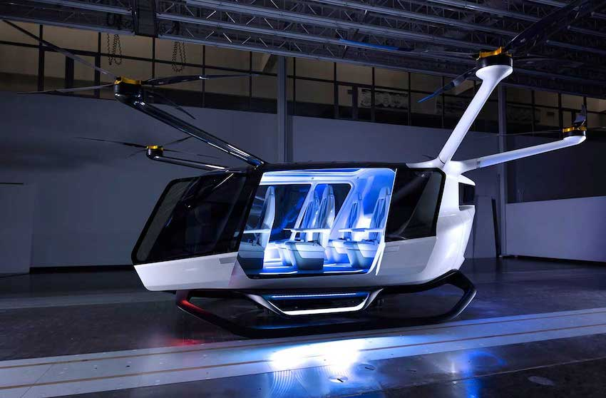
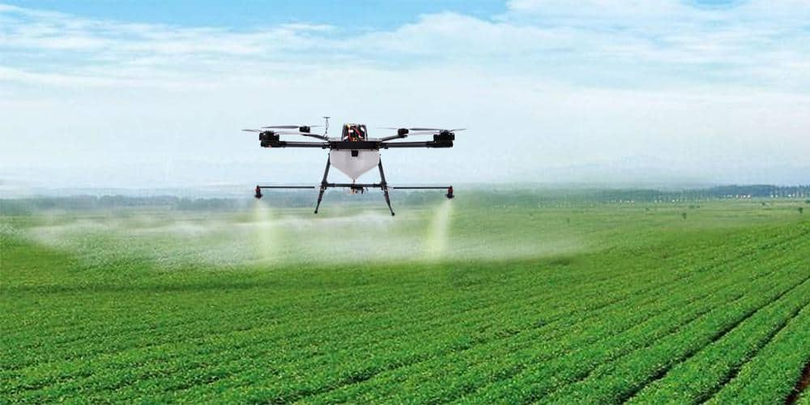

A future where we will be able to see drones in the sky, as we are used to see airplanes.
3 different categories of drones:
1 - Transport drones
In this area, many projects are present in order to create drones that will take the role of taxis.
In order to achieve this, air traffic must be designed so that it adapts to that which already exists.

2 - Agricultural drones
In this domain, a drone can be a good example to be programed in order to take care of a breeding, as:
- Distributing food
- Replacing a sheepdog
- Inspect plots
- To plant
- To treat
- To pluck

3 - Research drones
These types of drones will allows researchers to discover new things in the nature thanks to
special angles that drones can give us.
Also, these drones will help researchers when these humans can not have access anywhere
(like in a volcano).